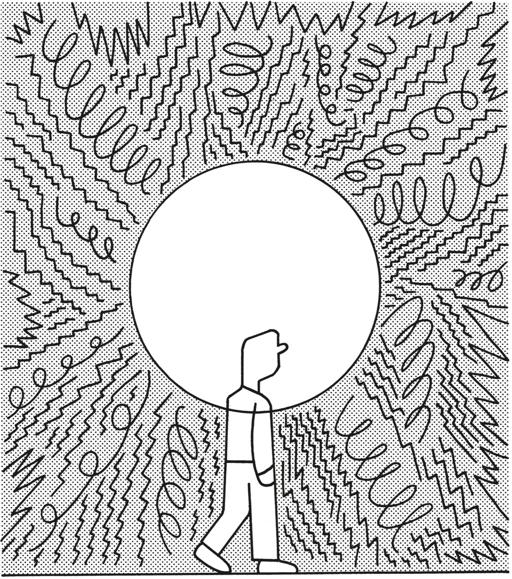
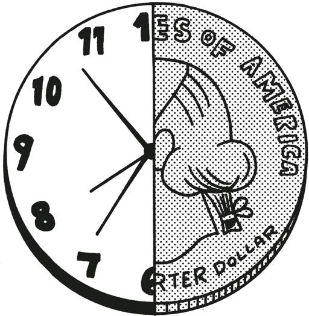
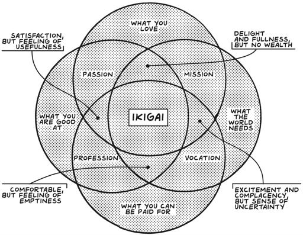
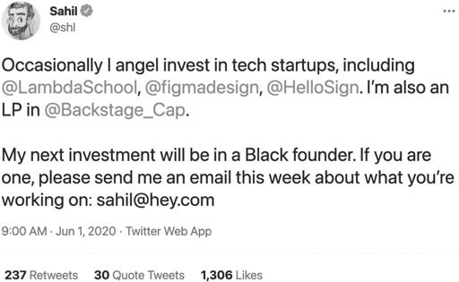
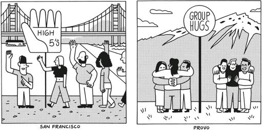

This chapter comes last, but I rank it first in significance.
这一章虽然最后出现，但我认为它在重要性上排第一。
Even after reading this book, you may be asking yourself if now is the best time to start a company. There is a lot broken with the world, and the future is uncertain. If you think starting a business looks risky, you’re right: It is and always will be. But I believe it’s one of the best ways to make change.
即使读完这本书，你可能仍在问自己现在是否是创业的最佳时机。世界上有很多问题，未来也充满不确定性。如果你认为创业看起来很冒险，你是对的：它确实如此，并且永远如此。但我相信这是改变世界的最佳方式之一。
Never mind if your business isn’t “changing the world” from day one, or doesn’t employ hundreds of people. As long as you’re making the world better in an honest, scalable way by selling a product worth paying for to a community that wants it, starting a company is worth it.
不要介意你的企业从第一天起是否在“改变世界”，或者是否雇佣了数百人。只要你通过向一个需要它的社区销售值得付费的产品，以诚实、可扩展的方式让世界变得更好，创业就是值得的。
I don’t think healing the world only happens if we are able to make “a dent in the universe,” as Steve Jobs is famously misquoted; it also comes about by repeatedly making small choices that compound and that improve our communities. You can’t change everything, but you can and should change a few things, to start.
我不认为治愈世界只有在我们能够像史蒂夫·乔布斯被误引的那样“在宇宙中留下印记”时才会发生；它也通过反复做出小的选择来实现，这些选择会累积并改善我们的社区。你不能改变一切，但你可以并且应该从改变一些事情开始。
The reward, once you’re profitable and growing sustainably because your customers are spreading the word, is that you get to decide what your company’s next positive impact will be. I know that once Gumroad got to that point, it was easier for me to focus on a more meaningful life. But it still wasn’t easy. I had to wrestle with a new definition of success, one that would be defined by a greater sense of purpose and mission.
一旦你盈利并可持续增长，因为你的客户在传播口碑，奖励就是你可以决定公司下一个积极影响是什么。我知道，一旦 Gumroad 达到这一点，我更容易专注于更有意义的生活。但这仍然不容易。我必须与成功的新定义斗争，这个定义将由更强的目标感和使命感来定义。
“A healthy man wants a thousand things, a sick man only wants one,” Confucius is purported to have said. Rephrased in the context of this book, a minimalist entrepreneur without a successful, sustainable business only wants one thing (that!), while one who has achieved it has the world as their oyster. And Søren Kierkegaard wrote in 1844 that anxiety is the “dizziness of freedom.” It’s what happens when you stare at the infinity of your own choices.
据说孔子曾说过：“健康的人想要一千样东西，生病的人只想要一样。” 在本书的背景下重新表述，一个没有成功、可持续业务的极简主义企业家只想要一件事（那件事！），而一个实现了这一目标的人则拥有无限的可能性。索伦·克尔凯郭尔在 1844 年写道，焦虑是“自由的眩晕”。当你凝视自己无限的选择时，这就是会发生的事情。

This is all part of what you get—for taking the risk, doing the hard work, and putting in the time to start and to scale your business—whether you like it or not. Now that you’ve arrived at your initial destination, where do you go next? That’s what we’ll spend this last chapter trying to answer.
这都是你得到的一部分——因为冒险、努力工作和投入时间来启动和扩大你的业务——无论你喜欢与否。现在你已经到达了最初的目的地，接下来你要去哪里？这就是我们将在最后一章中尝试回答的问题。
You’ve Made Money, Now Make Time
你已经赚到了钱，现在要争取时间
The first thing I did when Gumroad became profitable was to reclaim a significant part of my time.
当 Gumroad 开始盈利时，我做的第一件事就是收回我大部分的时间。

I had lived the founder life for four years, working whenever I wasn’t sleeping, neglecting relationships with friends and family, and generally putting work ahead of all else. With all that behind me, I was free to chart a different course. I found that when I wasn’t trying to placate investors or make the company grow faster than it was meant to grow, finally, I had time. While I was no longer on track to become a dollar billionaire, I realized I was a “time billionaire,” someone Graham Duncan defines as having at least a billion seconds left in their life—or at least thirty-one years.
我过了四年的创始人生活，除了睡觉就是工作，忽视了与朋友和家人的关系，总是把工作放在首位。随着这一切的结束，我可以自由地规划不同的路线。我发现，当我不再试图安抚投资者或让公司增长得比预期更快时，我终于有了时间。虽然我不再有望成为亿万富翁，但我意识到自己是一个“时间亿万富翁”，正如 Graham Duncan 所定义的那样，至少还有十亿秒的生命——至少三十一年。
I didn’t have a billion bucks, but I did have the luxury (or agony, depending on how you see it) of obligation-free days for the first time in a long time. I rented a modest apartment in Provo, gave up coffee and beer, and started meeting people who shared my creative interests. After years during which work was the crux of my identity, I wanted the rest of my life to be about anything else.
我没有十亿美金，但我确实有奢侈（或痛苦，取决于你怎么看）无义务的日子，这是很长时间以来的第一次。我在普罗沃租了一间简朴的公寓，戒掉了咖啡和啤酒，并开始结识那些与我有共同创作兴趣的人。在工作成为我身份的核心多年后，我希望余生能与工作无关。
First off: using my time to create more time. I accomplished that by further automating, outsourcing, or outright ignoring everything related to Gumroad I didn’t enjoy doing (see chapters 3 and 6). That way, I had as much time to do whatever I wanted, whenever I wanted to do it. Is this possible for everyone and every business? I’m not certain. But I do think that you’d be surprised at all the stuff you don’t need to do if you extricate yourself from situations and obligations your former self would have considered essential.
首先：利用我的时间来创造更多的时间。我通过进一步自动化、外包或直接忽略与 Gumroad 相关的所有我不喜欢做的事情来实现这一点（参见第 3 章和第 6 章）。这样，我就有足够的时间在任何我想做的时间做任何我想做的事情。每个人和每个企业都能做到这一点吗？我不确定。但我确实认为，如果你能从你以前认为必不可少的情况和义务中解脱出来，你会对所有不需要做的事情感到惊讶。
Then I went back to the beginning of my journey: I started creating again. First, I wrote fantasy in Provo as part of a creative writing workshop taught by Brandon Sanderson, one of my favorite authors. Afterward, I stuck around Utah and learned to paint. It probably isn’t a surprise, given that I run a company that employs and serves creators, but I like creating stuff.
然后我回到了旅程的起点：我又开始创作了。首先，我在普罗沃参加了由我最喜欢的作家之一布兰登·桑德森教授的创意写作工作坊，写了幻想小说。之后，我留在犹他州学习绘画。考虑到我经营着一家雇佣和服务创作者的公司，这可能并不令人惊讶，但我喜欢创造东西。
Creating ex nihilo is satisfying and fun, especially when it doesn’t need to pay the bills, and running a minimalist business allowed me to progress at a rapid pace. At some points, I spent upwards of twenty hours a week writing and painting. (And I haven’t stopped!)
从无到有的创造是令人满意和有趣的，尤其是在不需要支付账单的时候，而经营一家极简主义的公司让我能够快速进步。在某些时候，我每周花费超过二十个小时写作和绘画。（而且我还没有停下来！）
But for me, making stuff doesn’t complete me, just like chasing unicorns didn’t. I still cared about having a large impact on the world, and I still had a business to help me do it. I didn’t need Gumroad to be a billion-dollar company to be free to pursue my goals with maximal optionality and minimal baggage. And I promise that you don’t need your business to be that big, either, to accomplish all you hope to accomplish.
但对我来说，创造东西并不能让我感到完整，就像追逐独角兽不能让我完整一样。我仍然关心对世界产生重大影响，我仍然有一个业务来帮助我实现这一目标。我不需要 Gumroad 成为一家价值十亿美元的公司才能自由地以最大的选择性和最小的负担追求我的目标。我保证，你也不需要你的业务那么大，就能实现你希望实现的一切。

I believe our goal should be to bring together our passions, our missions, our professions, and our vocations. This is the Japanese concept of ikigai, which aligns what you love, with what the world needs, with what you can be paid for, and with what you are good at:
我相信我们的目标应该是将我们的激情、使命、职业和工作结合在一起。这就是日本的“生き甲斐”概念，它将你所爱的、世界所需的、你能获得报酬的以及你擅长的结合在一起：
When you are in ikigai, you feel at peace, and you can work to improve the world at the same time. You can live in the present while working toward a better future.
当你处于“生き甲斐”状态时，你会感到平和，并且可以同时努力改善世界。你可以活在当下，同时为更美好的未来而努力。
I believe strongly that the arc of humanity is in its infancy, and one of the major ways we’ll continue to make progress is via mindful business creation. One key reason I’ve used the word “minimalist” to describe entrepreneurship in this book is because I believe your business does not need to be the answer to every question. Becoming a minimalist entrepreneur may result in a great outcome for you while also creating opportunities for your team and your community, but it is unlikely to solve every problem you encounter, either for yourself or for the world.
我坚信人类的发展还处于初期阶段，而我们将继续取得进步的主要方式之一是通过有意识的商业创造。我在本书中使用“极简主义”来描述创业的一个关键原因是，我相信你的企业不需要成为每个问题的答案。成为一名极简主义企业家可能会为你带来很好的结果，同时也为你的团队和社区创造机会，但它不太可能解决你遇到的每一个问题，无论是对你自己还是对世界。
The goal here is to free yourself, to make the business require as little of you as you wish it to, so that you can engage with the world in the way you think best, whatever that looks like. For most, that means freeing others too. You can’t free everyone, or build every business, but you can at least teach a few people how.
这里的目标是解放自己，让企业对你的需求尽可能少，以便你能够以你认为最好的方式与世界互动，无论那是什么样子。对大多数人来说，这意味着也要解放他人。你不能解放所有人，或建立每一个企业，但至少可以教会一些人如何做到。
Create More Creators, CEOs, and Minimalist Entrepreneurs
创造更多的创作者、首席执行官和极简主义企业家
After two years in Provo, I had a new perspective on Gumroad and my mission. When I reimagined the future, I realized I had the chance not only to make a life for myself but also to expand opportunities for others to make a life for themselves.
在普罗沃的两年后，我对 Gumroad 和我的使命有了新的看法。当我重新想象未来时，我意识到我不仅有机会为自己创造生活，还可以为他人创造生活的机会。
Building Gumroad exposed me to a whole new range of creators: business owners. Not every act of creation requires a business, but many creators who reach scale start a business to manage their work. One of the things I’m proudest of is that I’ve made the business side of creation easier for thousands of other people and created business owners around the world.
创建 Gumroad 让我接触到了全新的创作者群体：企业主。并不是每一个创作行为都需要一个企业，但许多达到一定规模的创作者会成立企业来管理他们的工作。我最自豪的一件事就是我让创作的商业方面变得更简单，为全球成千上万的人创造了企业主。
In 2020, I stumbled upon the next step in my journey to make entrepreneurship accessible to all. Up until then, I had experimented in investing in early-stage tech startups by becoming a limited partner in Arlan Hamilton’s Backstage Capital and making several small angel investments in startups such as Lambda School, Figma, and Notion. But in the wake of the George Floyd protests in 2020, I knew I could do more, and I tweeted about wanting to invest in Black founders:
2020 年，我偶然发现了让创业对所有人都更易接触的下一步。在那之前，我通过成为 Arlan Hamilton 的 Backstage Capital 的有限合伙人，并对 Lambda School、Figma 和 Notion 等初创公司进行了一些小额天使投资，来尝试投资早期科技初创公司。但在 2020 年乔治·弗洛伊德抗议活动之后，我知道我可以做得更多，于是我在推特上发文表示希望投资于黑人创始人：

That tweet led to two hundred emails from Black founders and—most important—four new investments in startups founded by Black entrepreneurs. Since then, there have been several more through in-network referrals.
那条推文带来了两百封来自黑人创始人的电子邮件——最重要的是，促成了对由黑人企业家创立的初创公司的四项新投资。从那时起，通过网络内推荐又有了几项投资。
But many of these startups were looking to raise more capital, and I didn’t have very much. So I wrote a “memo” and emailed other investors in my network. One responded, “You should start a fund,” and offered to anchor it to help get it off the ground. I doubled down on my goal of creating more CEOs and minimalist entrepreneurs and launched my own fund last year.
但这些初创公司中有许多都希望筹集更多的资金，而我并没有那么多。因此，我写了一份“备忘录”并通过电子邮件发送给我网络中的其他投资者。有人回复说：“你应该成立一个基金”，并提出作为基石投资者来帮助启动它。我加倍努力实现创造更多 CEO 和极简主义企业家的目标，并在去年启动了我自己的基金。
Even though I never expected to be a venture capitalist myself, I am now able to support the kind of founders I meet primarily through my audience and through building Gumroad openly and transparently. Today I get to invest approximately $10 million a year in about fifty companies.
尽管我从未期望自己会成为一名风险投资家，但现在我能够支持我主要通过我的受众以及通过公开透明地构建 Gumroad 所遇到的创始人。今天，我每年大约可以投资 1000 万美元到大约五十家公司。
I still turn many founders away, but that’s not necessarily because I don’t believe in what they’re doing. It’s because most businesses would be better off without venture capital. Ever since I published “Reflecting on My Failure to Build a Billion-Dollar Company” in February 2019, I’ve met hundreds of minimalist entrepreneurs who have helped me widen my mental model for what a business really is.
我仍然拒绝了许多创始人，但这并不一定是因为我不相信他们在做的事情。这是因为大多数企业在没有风险资本的情况下会更好。自从我在 2019 年 2 月发表了《反思我未能建立一家十亿美元公司的经历》以来，我遇到了数百位极简主义企业家，他们帮助我拓宽了对企业真正意义的思维模式。
If you think becoming a minimalist entrepreneur was a good thing for you, you can help other people see the way. Peter Askew regularly tweets out domain names that he thinks would make great businesses so that others can follow in his footsteps. Chris Cantino and Jaime Schmidt of Schmidt’s Naturals started their own investment fund, Color, which supports and invests in underrepresented founders.
如果你认为成为极简主义企业家对你来说是一件好事，你可以帮助其他人看到这条路。彼得·阿斯丘经常在推特上发布他认为可以成为伟大企业的域名，以便其他人可以效仿他的脚步。施密特天然公司的克里斯·坎蒂诺和海梅·施密特创立了自己的投资基金 Color，支持并投资于代表性不足的创始人。
Being a creator and a minimalist entrepreneur is a path that should be available to a huge array of different kinds of people, and all different kinds of employees and customers should be able to find the exact right fit for themselves. I would argue that it should be available to all eight billion people on this planet. Alas, we’re not there yet.
成为创作者和极简主义企业家是一条应该对各种不同类型的人开放的道路，所有不同类型的员工和客户都应该能够找到最适合自己的位置。我认为这条路应该对地球上所有八十亿人开放。可惜，我们还没有达到那一步。
Though minimalist businesses cannot eliminate discrimination or repair every disparity in access to education, technology, and funding, they do offer a pathway for a wide variety of entrepreneurs to take control of their own destinies. Furthermore, I believe the path to a more equitable future is for more people to create a product or service and sell that, not only because it allows business owners to make a living from creating but also because by expanding the reach of entrepreneurship we can serve people whose problems have not yet been addressed by the free market.
尽管极简主义企业无法消除歧视或修复教育、技术和资金获取方面的每一个差距，但它们确实为各种各样的企业家提供了一条掌控自己命运的途径。此外，我相信通往更公平未来的道路在于更多的人创造产品或服务并进行销售，这不仅因为它允许企业主通过创造来谋生，还因为通过扩大创业的范围，我们可以服务于那些尚未被自由市场解决问题的人。
Ultimately, it’s up to everyone to decide how they want to run their life and their business. Moving from San Francisco to Provo reminded me that people have their own visions of how they want to serve others. It’s not one-size-fits-all, not even close, nor should it be. Different people have different problems and require different solutions.
最终，每个人都可以决定他们想如何经营自己的生活和事业。从旧金山搬到普罗沃让我意识到，人们有自己想要服务他人的愿景。这不是一刀切的，甚至相差甚远，也不应该如此。不同的人有不同的问题，需要不同的解决方案。

Save the Planet
拯救地球
We’ve talked about the myth of “changing the world” being a distraction from the forest of great business and community-serving opportunities you’re already in.
我们已经讨论过“改变世界”的神话，这是一种让你分心于你已经身处的伟大商业和社区服务机会的误导。
But you can still pick battles to fight, especially things that are within your control, like offsetting your carbon footprint and committing to a carbon-neutral future. Large organizations, which fuel the systems and servers that many minimalist entrepreneurs use to power their businesses, are accelerating this process and making it more straightforward to commit to carbon neutrality. In 2019, Shopify committed at least $5 million annually to the Shopify Sustainability Fund, which will invest not only in carbon sequestration but also in renewable energy and more sustainable operations for both merchants and buyers. By 2030, Google has committed to running on carbon-free energy everywhere at all times.
但你仍然可以选择要战斗的事情，尤其是那些在你控制范围内的，比如抵消你的碳足迹并承诺实现碳中和的未来。大型组织正在加速这一进程，并使承诺碳中和变得更加简单，这些组织为许多极简主义企业家用来推动其业务的系统和服务器提供动力。2019 年，Shopify 每年至少承诺向 Shopify 可持续发展基金投入 500 万美元，该基金不仅将投资于碳封存，还将投资于可再生能源和更可持续的商家和买家运营。到 2030 年，Google 承诺在任何地方和任何时间都使用无碳能源。
But it’s not just about relying on big business and its infrastructure to do the work. We can use our companies to make our own contributions to saving the planet no matter what size they are. Emily LaFave Olson, founder of Rainbow Road, a plant-based ice-cream company, is committed to using food as a tool to heal the planet. After she sold her first company, Foodzie, an online gourmet marketplace, and closed her second, Din, a meal kit delivery service, she too found herself asking, “What’s next?”
但这不仅仅是依赖大企业及其基础设施来完成工作。无论公司规模如何，我们都可以利用自己的公司为拯救地球做出贡献。Rainbow Road 的创始人 Emily LaFave Olson 是一家植物基冰淇淋公司，她致力于用食物作为工具来治愈地球。在她出售了第一家公司 Foodzie（一个在线美食市场）并关闭了第二家公司 Din（一个餐食套件配送服务）后，她也开始问自己：“接下来是什么？”
Her personal mission was to get closer to the earth, and she and her family moved to Hawaii as she considered her next venture. One idea kept coming to mind: ice cream.
她的个人使命是更接近大地，于是她和家人搬到了夏威夷，考虑她的下一个创业项目。一个想法不断浮现在她的脑海中：冰淇淋。
She set out to build Rainbow Road into a company that makes delicious ice cream by way of a full-cycle, circular system that is good for the earth. “Pono is a word in Hawaiian that means harmonious,” she says, “and I keep the company and myself in balance by always keeping our mission in mind as I make decisions and tell our story.”
她着手将 Rainbow Road 打造成一家通过完整循环、对地球有益的系统制作美味冰淇淋的公司。“Pono 是夏威夷语中表示和谐的词，”她说，“我通过在做决策和讲述我们的故事时始终牢记我们的使命，来保持公司和我自己的平衡。”
Having raised venture capital for her two previous companies, she’s committed to bootstrapping for now in order to preserve full decision-making control and to focus on profitability and taking her time. “I’m creating longevity by building a foundation more slowly,” she says, “so I ask myself, ‘What is the next smallest step I can take?’ ” That has allowed Rainbow Road to grow in a way that feels sustainable for the company and for the world. “I can grow something really substantial with baby steps, so I’m not afraid of taking the longer path.”
她之前为两家公司筹集了风险投资，现在她决定自筹资金，以保持完全的决策控制权，并专注于盈利和从容不迫地发展。“我通过更慢地建立基础来创造持久性，”她说，“所以我问自己，‘我能采取的下一个最小步骤是什么？’”这使得彩虹之路能够以一种对公司和世界都可持续的方式成长。“我可以通过小步伐发展出非常可观的东西，所以我不怕走更长的路。”
Do your research, figure out what really works, and start putting your mouth where your money is.
做好研究，找出真正有效的方法，然后开始把你的行动与资金结合起来。
Let Go
放手
I haven’t taken this path yet, but I’ve thought about it. One day I may want even more of my time back, or I may want to serve a totally different group of people in a totally different way. Just like I don’t expect anyone else to work at Gumroad forever, I don’t expect to either. Ultimately, I will let it go, either by choice or by force—and I certainly hope it’s the former.
我还没有走这条路，但我考虑过。有一天，我可能想要更多的时间，或者我可能想以完全不同的方式服务于完全不同的人群。就像我不期望其他人在 Gumroad 工作一辈子一样，我也不期望自己会。最终，我会放手，要么是出于选择，要么是被迫——我当然希望是前者。
You will ultimately have to make the same kind of decisions. You may walk away from your business completely. You may retire on a beach and feel like your work is done. You may decide to double down, raise money, and take a big swing with your next company. You may find a new CEO but stay involved in the running of the company as chairperson of the board, or start a nonprofit to tackle the next problem you find.
最终，你将不得不做出同样类型的决定。你可能会完全放弃你的生意。你可能会在海滩上退休，觉得你的工作已经完成。你可能会决定加倍努力，筹集资金，并在你的下一家公司大展拳脚。你可能会找到一个新的首席执行官，但仍然以董事会主席的身份参与公司的运营，或者创办一个非营利组织来解决你发现的下一个问题。
But where specifically do you go from here?
但具体来说，你从这里要去哪里？
The answer is that I don’t know. This question never goes away, and there will never be one right answer for every founder. This is why you should always try to build the right business for yourself selfishly while at the same time also serving a community of others selflessly. And you should prioritize your happiness while you do it!
答案是我不知道。这个问题永远不会消失，而且永远不会有一个适合每个创始人的正确答案。这就是为什么你应该总是努力为自己自私地建立合适的业务，同时也无私地服务于他人的社区。而且你应该在这样做的同时优先考虑自己的幸福！
I know it’s a lot to ask, but it’s time to ask yourself why.
我知道这要求很高，但现在是问自己为什么的时候了。
You picked a community. Why that one? You shipped a manual valuable process and then iterated it into a minimum viable product. Why did you choose to solve those problems in the ways that you did?
你选择了一个社区。为什么是那个？你实施了一个有价值的手动流程，然后将其迭代为一个最小可行产品。你为什么选择以那种方式解决这些问题？
If memory serves, you then sold that product to a hundred customers, who happily paid for it. Who did you reach out to first, and why them?
如果我没记错的话，你随后将该产品卖给了一百位客户，他们乐意为此付费。你最先联系了谁，为什么是他们？
You marketed the business and grew yourself and your team alongside it. Why, why, why?
你推广了业务，并在此过程中与团队一起成长。为什么，为什么，为什么？
And finally: Why do I want to move on from here? Why do I need to go anywhere at all?
最后：为什么我想从这里离开？我为什么需要去其他地方？
What helped me, and what will help you as you tackle these questions, is to spend your newfound time reflecting on your past and observing your present to figure out who you are and what you really want. Then you can figure out how to get what you want so you can stop asking these questions at all.
帮助我并将帮助你解决这些问题的方法是，利用你新获得的时间反思过去，观察现在，以弄清楚你是谁以及你真正想要什么。然后你可以找出如何得到你想要的东西，这样你就可以不再问这些问题。
Your “purpose” may be to create more creators, or to help more people start businesses, or to retire on a beach and spend all your time surfing. I won’t pretend to know.
你的“目标”可能是创造更多的创造者，或者帮助更多的人创业，或者是在海滩上退休，花所有的时间冲浪。我不会假装知道。
My goal in this book was to give you the tools that would enable you to build a business that ultimately gives you the choice and freedom to decide for yourself. It’s up to you now. What’s next?
我在这本书中的目标是为你提供工具，使你能够建立一个最终让你有选择和自由来自己决定的企业。现在由你决定。接下来是什么？
Whatever you do, send me a message and let me know. I’m on the internet:
无论你做什么，给我发个消息让我知道。我在互联网上：